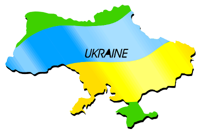
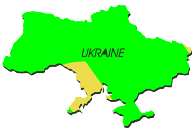

Per ottenere buone anteprime con la gestione del colore, questi sono i requisiti minimi:
Alcuni profili sono “generici” e possono essere scaricati dal sito del produttore della periferica; questo tipo di profilo è generato dalle misurazioni eseguite dal produttore su un certo numero di esemplari. Oggi questi profili sono spesso forniti dal produttore insieme al software del monitor, dello scanner o della stampante. Questi profili “preconfezionati” di solito non sono perfettamente adatti, ma sono un buon punto di partenza, soprattutto se non potete permettervi un dispositivo di calibrazione, che può essere costoso. Controllate sul sito del produttore se esiste un profilo per la vostra periferica. Per i profili colore dei monitor potete usare anche il database Taxi, che è gestito dal progetto OpenSUSE.
Il modo più preciso di profilare un monitor consiste nell'usare un apposito apparecchio elettronico, che in sostanza è uno speciale tipo di macchina fotografica in grado di misurare il colore. Il software invia al monitor dei colori di riferimento noti che vengono misurati dal dispositivo di profilazione, e in base a queste misure viene creato un profilo. Fino a non molto tempo fa non esistevano driver Linux per i normali colorimetri, ma grazie all'entusiasmo degli esperti della gestione del colore open source, oggi molti apparecchi possono essere usati almeno su Linux, Mac OS X e Windows. I driver open source possono anche essere compilati per le piattaforme UNIX, mentre è poco probabile che siano utilizzabili su Haiku, OS/2 ed eComStation.
Le impostazioni per la gestione del colore si trovano in Preferenze/Impostazioni documento. Ricordate che sul vostro sistema devono essere installati almeno un profilo RGB e uno CYMK per poter attivare la gestione del colore. Inoltre Scribus è più lento quando modificate, salvate o chiudete un file con la gestione del colore attiva, poiché littleCMS deve leggere ed eseguire le correzioni tra i profili.
|
“Profili del sistema:” questi sei menù a discesa mostrano i profili disponibili sul vostro sistema. I profili per le immagini (ad esempio, immagini bitmap) e per i colori in tinta unita devono essere impostati separatamente. Inoltre dovete impostare separatamente anche i profili per gli spazi colore RGB e CMYK. Per quanto riguarda le stampanti, attualmente Scribus è in grado di utilizzare soltanto profili per la stampa commerciale. I profili per le comuni stampanti da scrivania non funzionano con Scribus, e non vengono mostrati nei menù a discesa.
La seconda parte della finestra di dialogo permette di selezionare gli “intenti rendering”, che sono spiegati nella pagina successiva.
Nella parte inferiore si trova la casella “Simulazione di stampa su schermo”. Se attiva, Scribus e littleCMS simulano i colori che la stampante è in grado di riprodurre in base al profilo stampante selezionato.
La casella “Segna colori fuori gamma” evidenzia alcune alcune aree del documento in colore verde: i colori in queste aree potrebbero non essere stampati fedelmente, in base al profilo stampante scelto. Di solito i colori indicati come fuori gamma, quando stampati, saranno più scuri, più chiari o comunque alterati:
|  |  |
Un disegno visualizzato con l'avviso fuori gamma disattivato (a sinistra) e attivato (a destra) |
L'ultima opzione, “Usa compensazione punto nero”, è un aiuto alla visualizzazione delle ombre nelle immagini a colori. È necessaria un po' di sperimentazione per stabilire se migliora le vostre immagini.